Projects of research
Superpropulsion of droplets and soft elastic objects
with F. Celestini, M. Argentina, J. Mathiesen, T. Darmanin
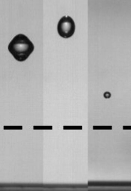

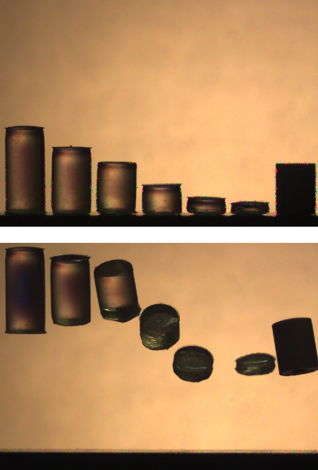
Inertial dynamics in liquid foams
with M. Argentina, N. Fraysse, F. Celestini, S. Cox, R. Goldstein, A. Pesci
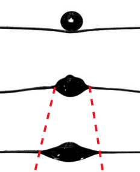

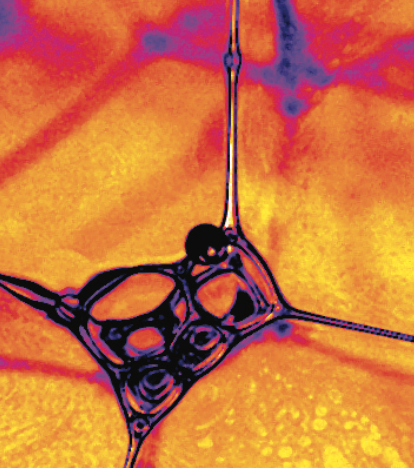
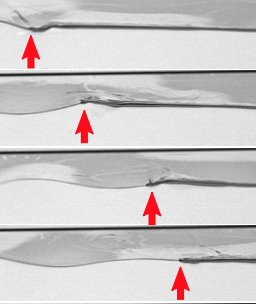
Droplet dynamics
with F. Celestini and T. Frisch
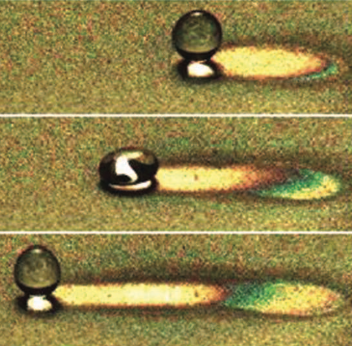
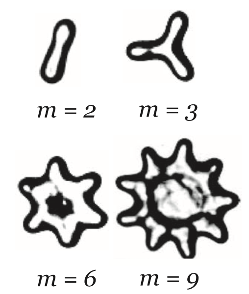
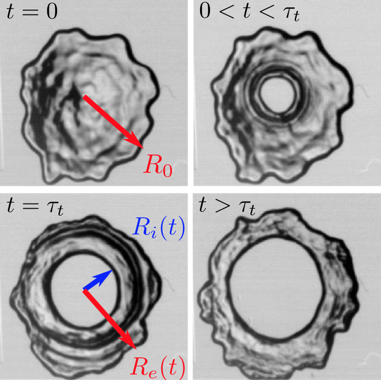
Swimming and fish locomotion
with M. Argentina
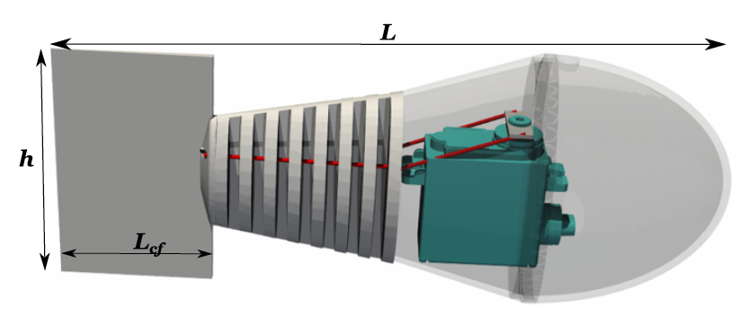
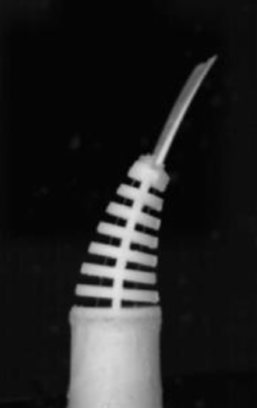
Three-dimensional foam flow resolved by fast X-ray tomographic microscopy
with R. Mokso, B. Dollet and S. Santucci
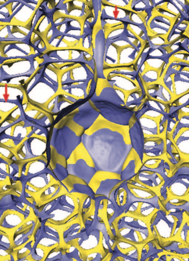
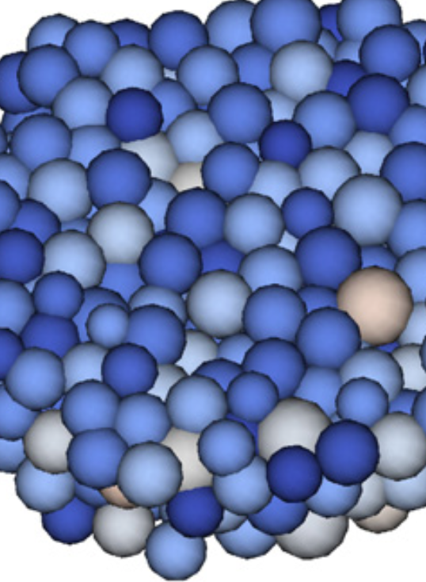